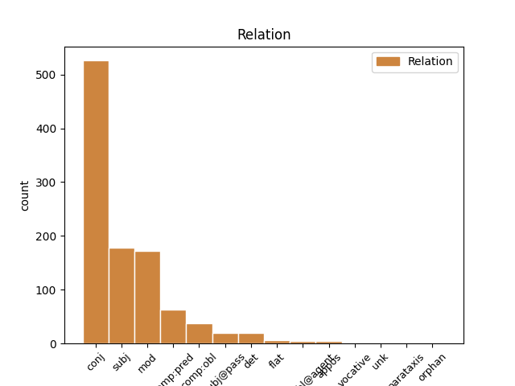
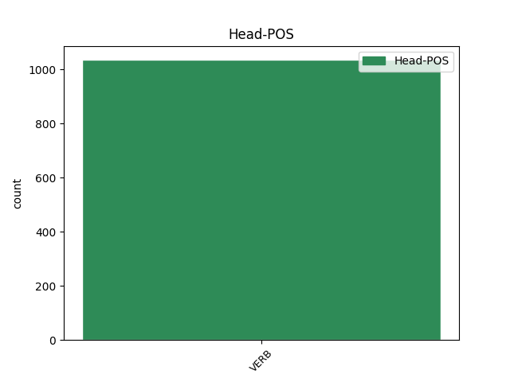
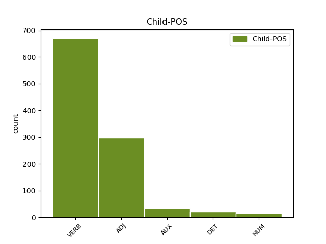

Distribution of features within this leaf



Agreement Rules sorted by frequency.
- When the dependent token is the conjunct(conj) of the head token, and the head token is VERB and the dependent token is VERB.
1 Не _ _ _ _ 0 _ _ _
2 мало _ _ _ _ 0 _ _ _
3 ти _ _ _ _ 0 _ _ _
4 величія _ _ _ _ 0 _ _ _
5 лелѣявшу _ _ _ _ 0 _ _ _
6 князя _ _ _ _ 0 _ _ _
7 на _ _ _ _ 0 _ _ _
8 влънах _ _ _ _ 0 _ _ _
9 стлавшу стьлати VERB V- Case=Dat|Gender=Masc|Number=Sing|Strength=Strong|Tense=Past|VerbForm=Part|Voice=Act 0 _ _ _
10 ему _ _ _ _ 0 _ _ _
11 зелѣну _ _ _ _ 0 _ _ _
12 траву _ _ _ _ 0 _ _ _
13 на _ _ _ _ 0 _ _ _
14 своихъ _ _ _ _ 0 _ _ _
15 сребреныхъ _ _ _ _ 0 _ _ _
16 брезѣхъ _ _ _ _ 0 _ _ _
17 одѣвавшу одѣвати VERB V- Case=Dat|Gender=Masc|Number=Sing|Strength=Strong|Tense=Past|VerbForm=Part|Voice=Act 9 conj _ ref=195
18 его _ _ _ _ 0 _ _ _
19 теплыми _ _ _ _ 0 _ _ _
20 мъглами _ _ _ _ 0 _ _ _
21 подъ _ _ _ _ 0 _ _ _
22 сѣнію _ _ _ _ 0 _ _ _
23 зелену _ _ _ _ 0 _ _ _
24 древу _ _ _ _ 0 _ _ _
1 Тъй тыи ADJ Pd Case=Nom|Gender=Masc|Number=Sing 3 subj _ ref=154
2 клюками _ _ _ _ 0 _ _ _
3 подпръ подъпрѣти VERB V- Case=Nom|Gender=Masc|Number=Sing|Strength=Strong|Tense=Past|VerbForm=Part|Voice=Act 0 _ _ _
4 ся _ _ _ _ 0 _ _ _
5 о _ _ _ _ 0 _ _ _
6 кони _ _ _ _ 0 _ _ _
7 и _ _ _ _ 0 _ _ _
8 скочи _ _ _ _ 0 _ _ _
9 къ _ _ _ _ 0 _ _ _
10 граду _ _ _ _ 0 _ _ _
11 Кыеву _ _ _ _ 0 _ _ _
1 Высоко _ _ _ _ 0 _ _ _
2 плаваеши _ _ _ _ 0 _ _ _
3 на _ _ _ _ 0 _ _ _
4 дѣло _ _ _ _ 0 _ _ _
5 въ _ _ _ _ 0 _ _ _
6 буести _ _ _ _ 0 _ _ _
7 яко _ _ _ _ 0 _ _ _
8 соколъ _ _ _ _ 0 _ _ _
9 на _ _ _ _ 0 _ _ _
10 вѣтрехъ _ _ _ _ 0 _ _ _
11 ширяя ширяти VERB V- Case=Nom|Gender=Masc|Number=Sing|Strength=Weak|Tense=Pres|VerbForm=Part|Voice=Act 0 _ _ _
12 ся _ _ _ _ 0 _ _ _
13 хотя хотѣти VERB V- Case=Nom|Gender=Masc|Number=Sing|Strength=Strong|Tense=Pres|VerbForm=Part|Voice=Act 11 mod _ ref=134
14 птицю _ _ _ _ 0 _ _ _
15 въ _ _ _ _ 0 _ _ _
16 буйствѣ _ _ _ _ 0 _ _ _
17 одолѣти _ _ _ _ 0 _ _ _
1 оже _ _ _ _ 0 _ _ _
2 ли _ _ _ _ 0 _ _ _
3 ѹбиють _ _ _ _ 0 _ _ _
4 и _ _ _ _ 0 _ _ _
5 а _ _ _ _ 0 _ _ _
6 ѹже _ _ _ _ 0 _ _ _
7 бѹдть _ _ _ _ 0 _ _ _
8 людиѥ _ _ _ _ 0 _ _ _
9 свѧзана съвязати VERB V- Case=Gen|Gender=Masc|Number=Sing|Strength=Strong|Tense=Past|VerbForm=Part|Voice=Pass 10 comp:pred _ ref=40
10 видѣли видѣти VERB V- Aspect=Res|Case=Nom|Gender=Masc|Number=Plur|Strength=Strong|VerbForm=Part|Voice=Act 0 _ _ _
11 то _ _ _ _ 0 _ _ _
12 платити _ _ _ _ 0 _ _ _
13 в _ _ _ _ 0 _ _ _
14 тѡмь _ _ _ _ 0 _ _ _
15 в҃ꙇ _ _ _ _ 0 _ _ _
16 гр҃и _ _ _ _ 0 _ _ _
1 тоуркы _ _ _ _ 0 _ _ _
2 ж _ _ _ _ 0 _ _ _
3 на _ _ _ _ 0 _ _ _
4 всѣхъ _ _ _ _ 0 _ _ _
5 мѣстѣх _ _ _ _ 0 _ _ _
6 бьахꙋ _ _ _ _ 0 _ _ _
7 сѧ _ _ _ _ 0 _ _ _
8 бес _ _ _ _ 0 _ _ _
9 престани _ _ _ _ 0 _ _ _
10 д҃нь _ _ _ _ 0 _ _ _
11 и _ _ _ _ 0 _ _ _
12 нощь _ _ _ _ 0 _ _ _
13 пременѧюще _ _ _ _ 0 _ _ _
14 сѧ _ _ _ _ 0 _ _ _
15 не _ _ _ _ 0 _ _ _
16 дающе даяти VERB V- Case=Nom|Gender=Masc|Number=Plur|Strength=Strong|Tense=Pres|VerbForm=Part|Voice=Act 0 _ _ _
17 ни _ _ _ _ 0 _ _ _
18 мало _ _ _ _ 0 _ _ _
19 ѡпочити _ _ _ _ 0 _ _ _
20 градскым градьскыи ADJ A- Case=Dat|Degree=Pos|Gender=Masc|Number=Plur|Strength=Weak 16 comp:obl _ ref=289v20
21 но _ _ _ _ 0 _ _ _
22 да _ _ _ _ 0 _ _ _
23 сѧ _ _ _ _ 0 _ _ _
24 оутрꙋдѧть _ _ _ _ 0 _ _ _
25 понеже _ _ _ _ 0 _ _ _
26 оуготовлѧхꙋ _ _ _ _ 0 _ _ _
27 сѧ _ _ _ _ 0 _ _ _
28 ко _ _ _ _ 0 _ _ _
29 пристоупꙋ _ _ _ _ 0 _ _ _
1 и _ _ _ _ 0 _ _ _
2 по _ _ _ _ 0 _ _ _
3 семъ _ _ _ _ 0 _ _ _
4 ц҃рю _ _ _ _ 0 _ _ _
5 приспѣвшꙋ _ _ _ _ 0 _ _ _
6 со _ _ _ _ 0 _ _ _
7 всѣми _ _ _ _ 0 _ _ _
8 велможи _ _ _ _ 0 _ _ _
9 и _ _ _ _ 0 _ _ _
10 съ _ _ _ _ 0 _ _ _
11 избранʼными избьрати VERB V- Case=Ins|Gender=Masc|Number=Plur|Strength=Weak|Tense=Past|VerbForm=Part|Voice=Pass 0 _ _ _
12 своими свои ADJ Pt Case=Ins|Gender=Masc|Number=Plur|Person=3|Poss=Yes|Reflex=Yes 11 mod _ ref=313v12
13 и _ _ _ _ 0 _ _ _
14 нападе _ _ _ _ 0 _ _ _
15 на _ _ _ _ 0 _ _ _
16 тоуркы _ _ _ _ 0 _ _ _
1 притрепа _ _ _ _ 0 _ _ _
2 славу _ _ _ _ 0 _ _ _
3 дѣду _ _ _ _ 0 _ _ _
4 своему _ _ _ _ 0 _ _ _
5 Всеславу _ _ _ _ 0 _ _ _
6 а _ _ _ _ 0 _ _ _
7 самъ самъ ADJ Pd Case=Nom|Gender=Masc|Number=Sing 14 subj@pass _ ref=144
8 подъ _ _ _ _ 0 _ _ _
9 чрълеными _ _ _ _ 0 _ _ _
10 щиты _ _ _ _ 0 _ _ _
11 на _ _ _ _ 0 _ _ _
12 кровавѣ _ _ _ _ 0 _ _ _
13 травѣ _ _ _ _ 0 _ _ _
14 притрепанъ притрепати VERB V- Case=Nom|Gender=Masc|Number=Sing|Strength=Strong|Tense=Past|VerbForm=Part|Voice=Pass 0 _ _ _
15 литовскыми _ _ _ _ 0 _ _ _
16 мечи _ _ _ _ 0 _ _ _
1 а _ _ _ _ 0 _ _ _
2 затѣмь _ _ _ _ 0 _ _ _
3 аче _ _ _ _ 0 _ _ _
4 и _ _ _ _ 0 _ _ _
5 кдѣ _ _ _ _ 0 _ _ _
6 налѣзеть _ _ _ _ 0 _ _ _
7 ѹдареныи ударити VERB V- Case=Nom|Gender=Masc|Number=Sing|Strength=Weak|Tense=Past|VerbForm=Part|Voice=Pass 0 _ _ _
8 тъ тыи DET Pd Case=Nom|Gender=Masc|Number=Sing 7 det _ ref=65
9 своѥго _ _ _ _ 0 _ _ _
10 истьцѧ _ _ _ _ 0 _ _ _
11 кто _ _ _ _ 0 _ _ _
12 ѥго _ _ _ _ 0 _ _ _
13 ѹдарилъ _ _ _ _ 0 _ _ _
14 то _ _ _ _ 0 _ _ _
15 ꙗрославъ _ _ _ _ 0 _ _ _
16 былъ _ _ _ _ 0 _ _ _
17 ѹставилъ _ _ _ _ 0 _ _ _
18 ѹбити _ _ _ _ 0 _ _ _
19 и _ _ _ _ 0 _ _ _
1 ѡномѹ _ _ _ _ 0 _ _ _
2 же _ _ _ _ 0 _ _ _
3 въспрѧнѹвъшю въспрянути VERB V- Case=Dat|Gender=Masc|Number=Sing|Strength=Strong|Tense=Past|VerbForm=Part|Voice=Act 0 _ _ _
4 и _ _ _ _ 0 _ _ _
5 радѹ _ _ _ _ 0 _ _ _
6 бывъшю быти AUX V- Case=Dat|Gender=Masc|Number=Sing|Strength=Strong|Tense=Past|VerbForm=Part|Voice=Act 3 conj _ ref=101
7 скоро _ _ _ _ 0 _ _ _
8 въставъ _ _ _ _ 0 _ _ _
9 и _ _ _ _ 0 _ _ _
10 въжьгъ _ _ _ _ 0 _ _ _
11 свѣщю _ _ _ _ 0 _ _ _
12 иде _ _ _ _ 0 _ _ _
13 на _ _ _ _ 0 _ _ _
14 ѹказаноѥ _ _ _ _ 0 _ _ _
15 ѥмѹ _ _ _ _ 0 _ _ _
16 мѣсто _ _ _ _ 0 _ _ _
1 не _ _ _ _ 0 _ _ _
2 бо _ _ _ _ 0 _ _ _
3 можахѹть _ _ _ _ 0 _ _ _
4 ни _ _ _ _ 0 _ _ _
5 въ _ _ _ _ 0 _ _ _
6 чемь _ _ _ _ 0 _ _ _
7 прѣслѹшати _ _ _ _ 0 _ _ _
8 его _ _ _ _ 0 _ _ _
9 вѣдѹще вѣдѣти VERB V- Case=Nom|Gender=Masc|Number=Plur|Strength=Strong|Tense=Pres|VerbForm=Part|Voice=Act 0 _ _ _
10 и _ _ _ _ 0 _ _ _
11 правьдьна правьдьныи ADJ A- Case=Gen|Degree=Pos|Gender=Masc|Number=Sing|Strength=Strong 9 comp:pred _ ref=78
12 и _ _ _ _ 0 _ _ _
13 ст҃а _ _ _ _ 0 _ _ _
1 биѥть _ _ _ _ 0 _ _ _
2 ли _ _ _ _ 0 _ _ _
3 не _ _ _ _ 0 _ _ _
4 смыслѧ съмыслити VERB V- Case=Nom|Gender=Masc|Number=Sing|Strength=Strong|Tense=Pres|VerbForm=Part|Voice=Act 0 _ _ _
5 пьꙗнъ пияныи ADJ A- Case=Nom|Degree=Pos|Gender=Masc|Number=Sing|Strength=Strong 4 conj _ ref=62
6 а _ _ _ _ 0 _ _ _
7 без _ _ _ _ 0 _ _ _
8 вины _ _ _ _ 0 _ _ _
9 то _ _ _ _ 0 _ _ _
10 ꙗкоже _ _ _ _ 0 _ _ _
11 въ _ _ _ _ 0 _ _ _
12 свободнѣмь _ _ _ _ 0 _ _ _
13 платежь _ _ _ _ 0 _ _ _
14 тако _ _ _ _ 0 _ _ _
15 же _ _ _ _ 0 _ _ _
16 и _ _ _ _ 0 _ _ _
17 в _ _ _ _ 0 _ _ _
18 закупѣ _ _ _ _ 0 _ _ _
1 и _ _ _ _ 0 _ _ _
2 ѥдиномȣ единъ NUM Ma Case=Dat|Gender=Masc|Number=Sing 3 subj _ ref=59
3 сѣдъшю сѣсти VERB V- Case=Dat|Gender=Masc|Number=Sing|Strength=Strong|Tense=Past|VerbForm=Part|Voice=Act 0 _ _ _
4 на _ _ _ _ 0 _ _ _
5 столѣ _ _ _ _ 0 _ _ _
6 томь _ _ _ _ 0 _ _ _
7 брата _ _ _ _ 0 _ _ _
8 и _ _ _ _ 0 _ _ _
9 оц҃ѧ _ _ _ _ 0 _ _ _
10 своѥго _ _ _ _ 0 _ _ _
11 дрѹгомѹ _ _ _ _ 0 _ _ _
12 же _ _ _ _ 0 _ _ _
13 възвративъшю _ _ _ _ 0 _ _ _
14 сѧ _ _ _ _ 0 _ _ _
15 въ _ _ _ _ 0 _ _ _
16 область _ _ _ _ 0 _ _ _
17 свою _ _ _ _ 0 _ _ _
1 единъ _ _ _ _ 0 _ _ _
2 токмо _ _ _ _ 0 _ _ _
3 зеновьꙗнин _ _ _ _ 0 _ _ _
4 к҃нзь _ _ _ _ 0 _ _ _
5 именем _ _ _ _ 0 _ _ _
6 зꙋстѣнїа _ _ _ _ 0 _ _ _
7 прїиде _ _ _ _ 0 _ _ _
8 къ _ _ _ _ 0 _ _ _
9 ц҃рю _ _ _ _ 0 _ _ _
10 на _ _ _ _ 0 _ _ _
11 помощь _ _ _ _ 0 _ _ _
12 на _ _ _ _ 0 _ _ _
13 двоу _ _ _ _ 0 _ _ _
14 кораблѣх _ _ _ _ 0 _ _ _
15 и _ _ _ _ 0 _ _ _
16 на _ _ _ _ 0 _ _ _
17 двоу _ _ _ _ 0 _ _ _
18 катаргахъ _ _ _ _ 0 _ _ _
19 въ въоружити VERB V- Case=Loc|Gender=Fem|Number=Plur|Strength=Weak|Tense=Past|VerbForm=Part|Voice=Pass 0 _ _ _
20 ѡрꙋженых ѡрꙋженых VERB V- Case=Loc|Gender=Fem|Number=Plur|Strength=Weak|Tense=Past|VerbForm=Part|Voice=Pass 19 flat _ ref=292r22
21 имѣѧ _ _ _ _ 0 _ _ _
22 сʼ _ _ _ _ 0 _ _ _
23 собою _ _ _ _ 0 _ _ _
24 х҃ _ _ _ _ 0 _ _ _
25 храбрых _ _ _ _ 0 _ _ _
1 кто _ _ _ _ 0 _ _ _
2 бо _ _ _ _ 0 _ _ _
3 не _ _ _ _ 0 _ _ _
4 почюдить _ _ _ _ 0 _ _ _
5 сѧ _ _ _ _ 0 _ _ _
6 ѹбо _ _ _ _ 0 _ _ _
7 бл҃женѹѹмѹ _ _ _ _ 0 _ _ _
8 семѹ _ _ _ _ 0 _ _ _
9 ѥже _ _ _ _ 0 _ _ _
10 въ _ _ _ _ 0 _ _ _
11 такои _ _ _ _ 0 _ _ _
12 тьмьнѣ _ _ _ _ 0 _ _ _
13 пещерѣ _ _ _ _ 0 _ _ _
14 пребываꙗ прѣбывати VERB V- Case=Nom|Gender=Masc|Number=Sing|Strength=Strong|Tense=Pres|VerbForm=Part|Voice=Act 0 _ _ _
15 ѥдинъ единъ NUM Ma Case=Nom|Gender=Masc|Number=Sing 14 comp:pred _ ref=19
16 мъножьства _ _ _ _ 0 _ _ _
17 пълковъ _ _ _ _ 0 _ _ _
18 невидимыхъ _ _ _ _ 0 _ _ _
19 бѣсовъ _ _ _ _ 0 _ _ _
20 не _ _ _ _ 0 _ _ _
21 ѹбоꙗ _ _ _ _ 0 _ _ _
22 сѧ _ _ _ _ 0 _ _ _
23 нъ _ _ _ _ 0 _ _ _
24 крѣпъко _ _ _ _ 0 _ _ _
25 стоꙗ _ _ _ _ 0 _ _ _
26 ꙗко _ _ _ _ 0 _ _ _
27 храбъръ _ _ _ _ 0 _ _ _
28 сильнъ _ _ _ _ 0 _ _ _
29 б҃а _ _ _ _ 0 _ _ _
30 молꙗаше _ _ _ _ 0 _ _ _
31 и _ _ _ _ 0 _ _ _
32 г҃а _ _ _ _ 0 _ _ _
33 иіс _ _ _ _ 0 _ _ _
34 х҃а _ _ _ _ 0 _ _ _
35 на _ _ _ _ 0 _ _ _
36 помощь _ _ _ _ 0 _ _ _
37 себе _ _ _ _ 0 _ _ _
38 призывающа _ _ _ _ 0 _ _ _
1 и _ _ _ _ 0 _ _ _
2 въ _ _ _ _ 0 _ _ _
3 ѹтрѣи _ _ _ _ 0 _ _ _
4 дн҃ь _ _ _ _ 0 _ _ _
5 сѣдъшемъ _ _ _ _ 0 _ _ _
6 имъ _ _ _ _ 0 _ _ _
7 на _ _ _ _ 0 _ _ _
8 обѣдѣ _ _ _ _ 0 _ _ _
9 хлѣбомъ _ _ _ _ 0 _ _ _
10 же _ _ _ _ 0 _ _ _
11 тѣмъ _ _ _ _ 0 _ _ _
12 издрѣзаномъ _ _ _ _ 0 _ _ _
13 сѹщемъ быти AUX V- Case=Dat|Gender=Masc|Number=Plur|Strength=Strong|Tense=Pres|VerbForm=Part|Voice=Act 16 mod _ ref=38
14 таче _ _ _ _ 0 _ _ _
15 блаженыи _ _ _ _ 0 _ _ _
16 прѣзьрѣвъ прѣзьрѣти VERB V- Case=Nom|Gender=Masc|Number=Sing|Strength=Strong|Tense=Past|VerbForm=Part|Voice=Act 0 _ _ _
17 и _ _ _ _ 0 _ _ _
18 видѣ _ _ _ _ 0 _ _ _
19 хлебы _ _ _ _ 0 _ _ _
20 такы _ _ _ _ 0 _ _ _
21 сѹща _ _ _ _ 0 _ _ _
1 тъгда _ _ _ _ 0 _ _ _
2 изникъ _ _ _ _ 0 _ _ _
3 видѣтъ _ _ _ _ 0 _ _ _
4 и _ _ _ _ 0 _ _ _
5 познавъ познати VERB V- Case=Nom|Gender=Masc|Number=Sing|Strength=Strong|Tense=Past|VerbForm=Part|Voice=Act 0 _ _ _
6 кнꙗзꙗ _ _ _ _ 0 _ _ _
7 ѥго _ _ _ _ 0 _ _ _
8 сѹща быти AUX V- Case=Gen|Gender=Masc|Number=Sing|Strength=Strong|Tense=Pres|VerbForm=Part|Voice=Act 5 comp:pred _ ref=22
9 и _ _ _ _ 0 _ _ _
10 въ _ _ _ _ 0 _ _ _
11 страсѣ _ _ _ _ 0 _ _ _
12 бывъ _ _ _ _ 0 _ _ _
13 не _ _ _ _ 0 _ _ _
14 отъврьзе _ _ _ _ 0 _ _ _
15 вратъ _ _ _ _ 0 _ _ _
16 нъ _ _ _ _ 0 _ _ _
17 бл҃женѹѹмѹ _ _ _ _ 0 _ _ _
18 съповѣдатъ _ _ _ _ 0 _ _ _
19 тече _ _ _ _ 0 _ _ _
20 ономѹ _ _ _ _ 0 _ _ _
21 же _ _ _ _ 0 _ _ _
22 стоꙗщю _ _ _ _ 0 _ _ _
23 предъ _ _ _ _ 0 _ _ _
24 враты _ _ _ _ 0 _ _ _
25 и _ _ _ _ 0 _ _ _
26 тьрпꙗщю _ _ _ _ 0 _ _ _
27 о _ _ _ _ 0 _ _ _
28 семь _ _ _ _ 0 _ _ _
29 подражающю _ _ _ _ 0 _ _ _
30 ст҃го _ _ _ _ 0 _ _ _
31 и _ _ _ _ 0 _ _ _
32 вьрховьнꙗаго _ _ _ _ 0 _ _ _
33 ап҃сла _ _ _ _ 0 _ _ _
34 петра _ _ _ _ 0 _ _ _
1 ѡни _ _ _ _ 0 _ _ _
2 же _ _ _ _ 0 _ _ _
3 ꙗко _ _ _ _ 0 _ _ _
4 землꙗ _ _ _ _ 0 _ _ _
5 жажющиꙗ _ _ _ _ 0 _ _ _
6 воды _ _ _ _ 0 _ _ _
7 тако _ _ _ _ 0 _ _ _
8 приимаахѹ _ _ _ _ 0 _ _ _
9 словеса _ _ _ _ 0 _ _ _
10 ѥго _ _ _ _ 0 _ _ _
11 приносꙗще приносити VERB V- Case=Nom|Gender=Masc|Number=Plur|Strength=Strong|Tense=Pres|VerbForm=Part|Voice=Act 0 _ _ _
12 трѹдовъ _ _ _ _ 0 _ _ _
13 своихъ _ _ _ _ 0 _ _ _
14 плоды _ _ _ _ 0 _ _ _
15 къ _ _ _ _ 0 _ _ _
16 господѹ _ _ _ _ 0 _ _ _
17 овъ овъ ADJ Px Case=Nom|Gender=Masc|Number=Sing 11 appos _ ref=20
18 съто _ _ _ _ 0 _ _ _
19 овъ _ _ _ _ 0 _ _ _
20 же _ _ _ _ 0 _ _ _
21 ѯ҃ _ _ _ _ 0 _ _ _
1 таче _ _ _ _ 0 _ _ _
2 се _ _ _ _ 0 _ _ _
3 ꙗко _ _ _ _ 0 _ _ _
4 ѹвѣдѣша _ _ _ _ 0 _ _ _
5 мнози _ _ _ _ 0 _ _ _
6 ѿ _ _ _ _ 0 _ _ _
7 болѧръ _ _ _ _ 0 _ _ _
8 сн҃ове _ _ _ _ 0 _ _ _
9 сѹще _ _ _ _ 0 _ _ _
10 въ _ _ _ _ 0 _ _ _
11 покаꙗнии _ _ _ _ 0 _ _ _
12 томѹ _ _ _ _ 0 _ _ _
13 ꙗкоже _ _ _ _ 0 _ _ _
14 прѣдани прѣдати VERB V- Case=Nom|Gender=Masc|Number=Plur|Strength=Strong|Tense=Past|VerbForm=Part|Voice=Pass 0 _ _ _
15 бл҃жныимь блаженыи ADJ A- Case=Ins|Degree=Pos|Gender=Masc|Number=Sing|Strength=Weak 14 comp:obl@agent _ ref=102
16 томѹ _ _ _ _ 0 _ _ _
17 съжалиша _ _ _ _ 0 _ _ _
18 сѧ _ _ _ _ 0 _ _ _
19 зѣло _ _ _ _ 0 _ _ _
20 ѥже _ _ _ _ 0 _ _ _
21 тако _ _ _ _ 0 _ _ _
22 дх҃овьныи _ _ _ _ 0 _ _ _
23 оц҃ь _ _ _ _ 0 _ _ _
24 ихъ _ _ _ _ 0 _ _ _
25 посрамленъ _ _ _ _ 0 _ _ _
26 бысть _ _ _ _ 0 _ _ _
27 и _ _ _ _ 0 _ _ _
28 ѿ _ _ _ _ 0 _ _ _
29 манастырѧ _ _ _ _ 0 _ _ _
30 ѿгънанъ _ _ _ _ 0 _ _ _
31 ѥгоже _ _ _ _ 0 _ _ _
32 приꙗтъ _ _ _ _ 0 _ _ _
33 ѿ _ _ _ _ 0 _ _ _
34 блаженаго _ _ _ _ 0 _ _ _
35 ѳеодисиѧ _ _ _ _ 0 _ _ _
1 аще _ _ _ _ 0 _ _ _
2 бо _ _ _ _ 0 _ _ _
3 реч _ _ _ _ 0 _ _ _
4 не _ _ _ _ 0 _ _ _
5 г҃ь _ _ _ _ 0 _ _ _
6 ли _ _ _ _ 0 _ _ _
7 хранить _ _ _ _ 0 _ _ _
8 града _ _ _ _ 0 _ _ _
9 всоуе _ _ _ _ 0 _ _ _
10 бʼдѧ бъдѣти VERB V- Case=Nom|Gender=Masc|Number=Sing|Strength=Strong|Tense=Pres|VerbForm=Part|Voice=Act 0 _ _ _
11 стрегїи стрѣщи VERB V- Case=Nom|Gender=Masc|Number=Plur|Strength=Weak|Tense=Past|VerbForm=Part|Voice=Act 10 subj _ ref=314r8
1 прпдбне прѣподобьныи ADJ A- Case=Voc|Degree=Pos|Gender=Masc|Number=Sing|Strength=Strong 4 vocative _ ref=213.22
2 бѣсовьскых _ _ _ _ 0 _ _ _
3 козни _ _ _ _ 0 _ _ _
4 избѣгъ избѣгнути VERB V- Case=Nom|Gender=Masc|Number=Sing|Strength=Strong|Tense=Past|VerbForm=Part|Voice=Act 0 _ _ _
5 и _ _ _ _ 0 _ _ _
6 ѿ _ _ _ _ 0 _ _ _
7 сѣти _ _ _ _ 0 _ _ _
8 ѥго _ _ _ _ 0 _ _ _
1 друзии _ _ _ _ 0 _ _ _
2 трепетаху _ _ _ _ 0 _ _ _
3 зрѧще зьрѣти VERB V- Case=Nom|Gender=Masc|Number=Plur|Strength=Strong|Tense=Pres|VerbForm=Part|Voice=Act 0 _ _ _
4 ѹбиваѥмых оубивати VERB V- Case=Gen|Gender=Masc|Number=Plur|Strength=Weak|Tense=Pres|VerbForm=Part|Voice=Pass 3 unk _ ref=true
1 и _ _ _ _ 0 _ _ _
2 оба оба NUM Ma Case=Nom|Gender=Masc|Number=Dual 3 subj@pass _ ref=true
3 положена положити VERB V- Case=Nom|Gender=Masc|Number=Dual|Strength=Strong|Tense=Past|VerbForm=Part|Voice=Pass 0 _ _ _
4 ѹ _ _ _ _ 0 _ _ _
5 ст҃го _ _ _ _ 0 _ _ _
6 георгиꙗ _ _ _ _ 0 _ _ _
7 въ _ _ _ _ 0 _ _ _
8 манастꙑри _ _ _ _ 0 _ _ _
Disagree Examples:
1 и _ _ _ _ 0 _ _ _
2 бѹлатъ _ _ _ _ 0 _ _ _
3 бѣгъ _ _ _ _ 0 _ _ _
4 послалъ _ _ _ _ 0 _ _ _
5 скоро _ _ _ _ 0 _ _ _
6 да _ _ _ _ 0 _ _ _
7 къ _ _ _ _ 0 _ _ _
8 ширваншѣ _ _ _ _ 0 _ _ _
9 бѣгѹ _ _ _ _ 0 _ _ _
10 что _ _ _ _ 0 _ _ _
11 сѹдно _ _ _ _ 0 _ _ _
12 рѹское _ _ _ _ 0 _ _ _
13 разбило разбити VERB V- Aspect=Res|Case=Nom|Gender=Neut|Number=Sing|Strength=Strong|VerbForm=Part|Voice=Act 0 _ _ _
14 под _ _ _ _ 0 _ _ _
15 тархи _ _ _ _ 0 _ _ _
16 и _ _ _ _ 0 _ _ _
17 каитакы _ _ _ _ 0 _ _ _
18 пришедъ _ _ _ _ 0 _ _ _
19 людеи _ _ _ _ 0 _ _ _
20 поимали поимати VERB V- Aspect=Res|Case=Nom|Gender=Masc|Number=Plur|Strength=Strong|VerbForm=Part|Voice=Act 13 conj _ ref=4
21 а _ _ _ _ 0 _ _ _
22 товаръ _ _ _ _ 0 _ _ _
23 их _ _ _ _ 0 _ _ _
24 розъграбили _ _ _ _ 0 _ _ _
1 чюнеръ _ _ _ _ 0 _ _ _
2 же _ _ _ _ 0 _ _ _
3 град _ _ _ _ 0 _ _ _
4 есть _ _ _ _ 0 _ _ _
5 на _ _ _ _ 0 _ _ _
6 ѡстровꙋ _ _ _ _ 0 _ _ _
7 на _ _ _ _ 0 _ _ _
8 каменомъ _ _ _ _ 0 _ _ _
9 не _ _ _ _ 0 _ _ _
10 дѣланъ дѣлати VERB V- Case=Nom|Gender=Masc|Number=Sing|Strength=Strong|Tense=Past|VerbForm=Part|Voice=Pass 0 _ _ _
11 ничим ничьто ADJ Px Case=Ins|Gender=Neut|Number=Sing 10 comp:obl@agent _ ref=7
12 бг҃мь _ _ _ _ 0 _ _ _
13 сътворенъ _ _ _ _ 0 _ _ _
1 и _ _ _ _ 0 _ _ _
2 ѡнъ _ _ _ _ 0 _ _ _
3 еще _ _ _ _ 0 _ _ _
4 прибавилъ прибавити VERB V- Aspect=Res|Case=Nom|Gender=Masc|Number=Sing|Strength=Strong|VerbForm=Part|Voice=Act 0 _ _ _
5 мало _ _ _ _ 0 _ _ _
6 вышло выити VERB V- Aspect=Res|Case=Nom|Gender=Neut|Number=Sing|Strength=Strong|VerbForm=Part|Voice=Act 4 parataxis _ ref=22
7 с _ _ _ _ 0 _ _ _
8 нимъ _ _ _ _ 0 _ _ _
9 к҃ _ _ _ _ 0 _ _ _
10 тысѧч _ _ _ _ 0 _ _ _
11 пѣших _ _ _ _ 0 _ _ _
12 людеи _ _ _ _ 0 _ _ _
13 двѣ _ _ _ _ 0 _ _ _
14 тысѧч _ _ _ _ 0 _ _ _
15 конных _ _ _ _ 0 _ _ _
16 людеи _ _ _ _ 0 _ _ _
17 да _ _ _ _ 0 _ _ _
18 к҃ _ _ _ _ 0 _ _ _
19 слоновъ _ _ _ _ 0 _ _ _
1 симъ сии ADJ Pd Case=Dat|Gender=Masc|Number=Plur 4 comp:obl _ ref=26.1
2 бо _ _ _ _ 0 _ _ _
3 первое _ _ _ _ 0 _ _ _
4 преложены прѣложити VERB V- Case=Nom|Gender=Fem|Number=Plur|Strength=Strong|Tense=Past|VerbForm=Part|Voice=Pass 0 _ _ _
5 книги _ _ _ _ 0 _ _ _
6 маравѣ _ _ _ _ 0 _ _ _
7 яже _ _ _ _ 0 _ _ _
8 презва _ _ _ _ 0 _ _ _
9 сѧ _ _ _ _ 0 _ _ _
10 грамота _ _ _ _ 0 _ _ _
11 словѣньская _ _ _ _ 0 _ _ _
12 яже _ _ _ _ 0 _ _ _
13 грамота _ _ _ _ 0 _ _ _
14 есть _ _ _ _ 0 _ _ _
15 в _ _ _ _ 0 _ _ _
16 руси _ _ _ _ 0 _ _ _
17 и _ _ _ _ 0 _ _ _
18 в _ _ _ _ 0 _ _ _
19 болгарѣх _ _ _ _ 0 _ _ _
20 дунаискихъ _ _ _ _ 0 _ _ _
1 а _ _ _ _ 0 _ _ _
2 своея свои ADJ Pt Case=Gen|Gender=Fem|Number=Sing|Person=3|Poss=Yes|Reflex=Yes 4 comp:obl _ ref=67.10
3 сѧ _ _ _ _ 0 _ _ _
4 ѡхабивъ охабити VERB V- Case=Nom|Gender=Masc|Number=Sing|Strength=Strong|Tense=Past|VerbForm=Part|Voice=Act 0 _ _ _